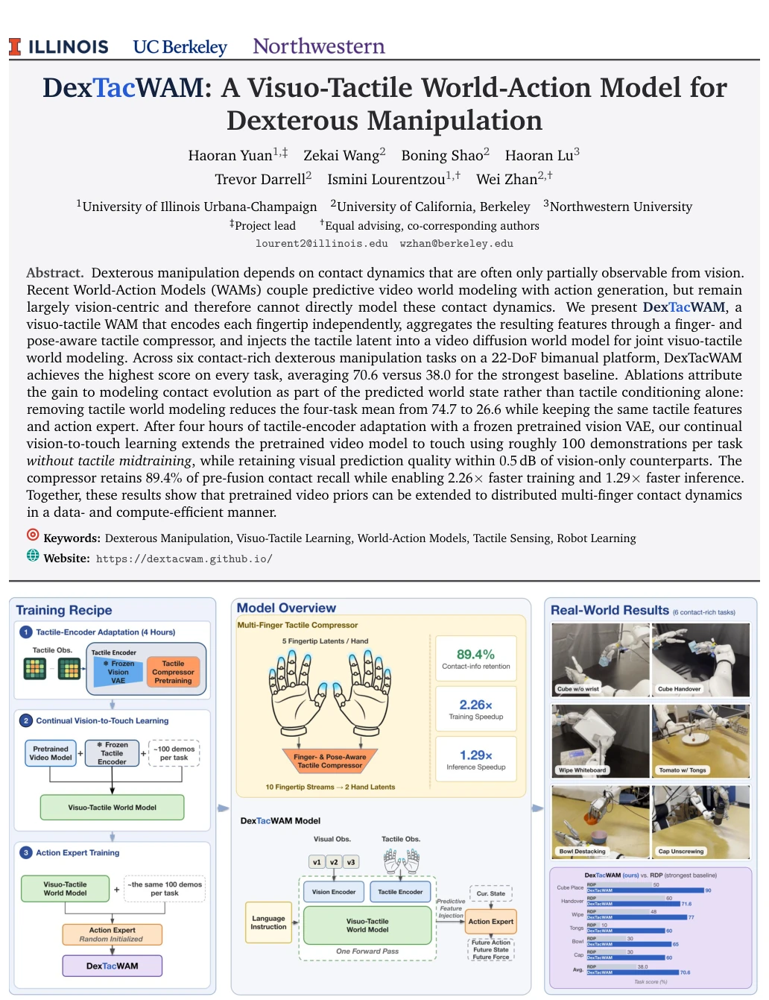
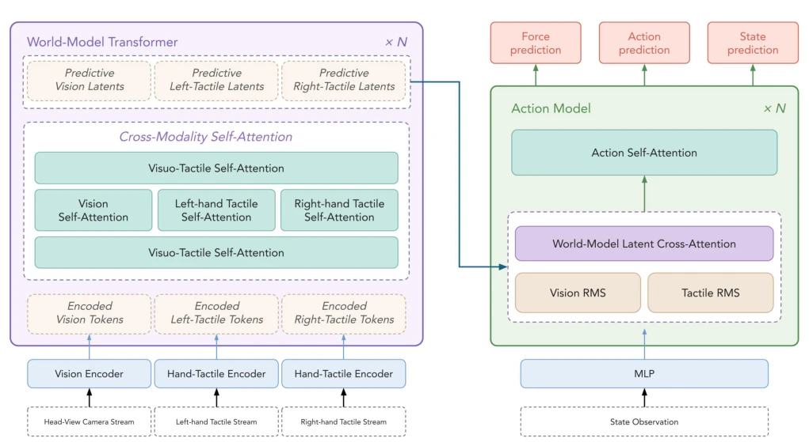
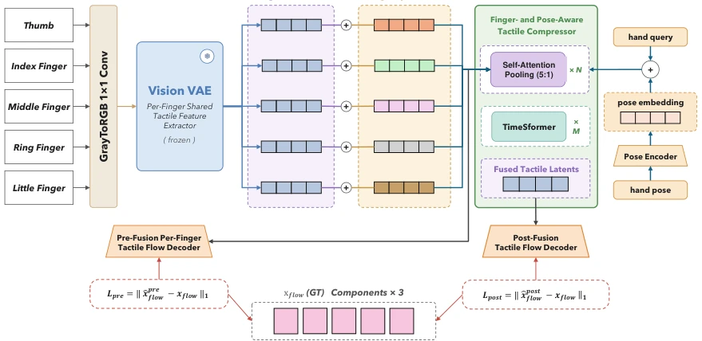
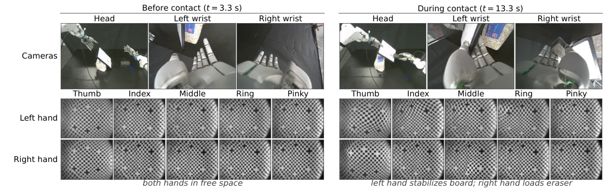
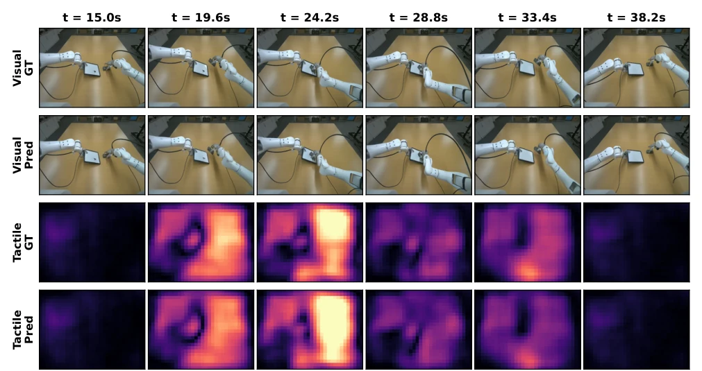
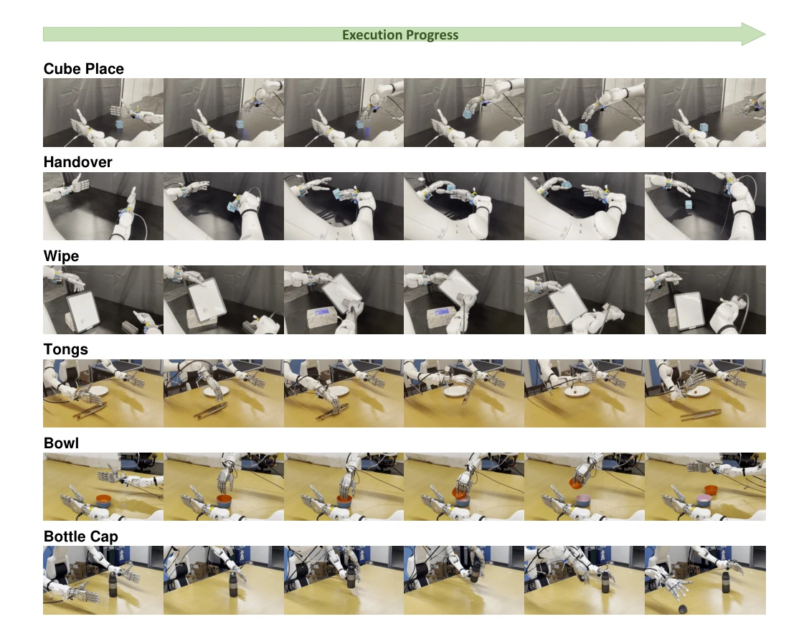
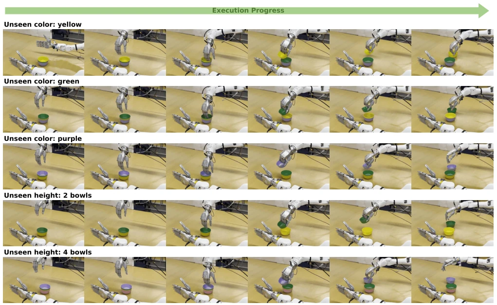
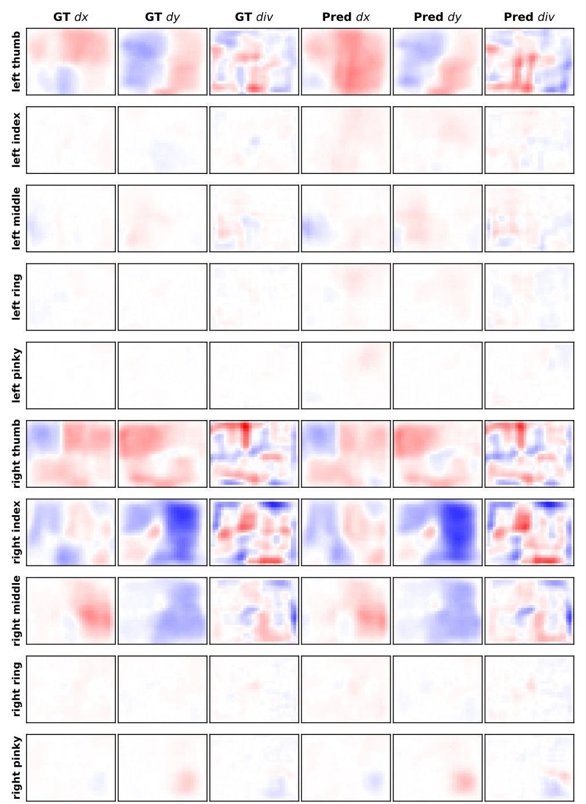
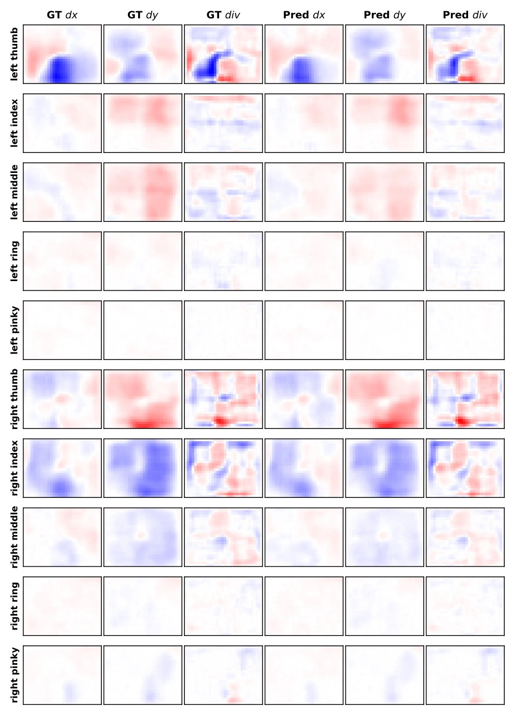
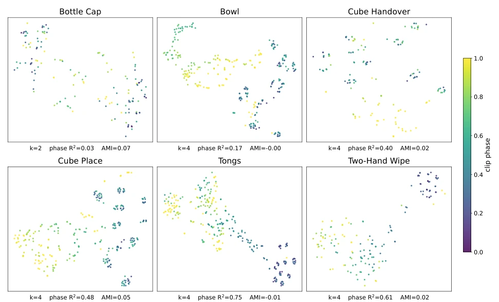

This paper adds "tactile skin" to world models, but it is somewhat like equipping a blind person with an expensive electronic eye. The core of DexTacWAM lies in treating tactile information as part of the world state, rather than merely a policy input, which is quite clever; after all, how can one know if slipping occurs just by looking at the camera? However, it relies on Sharpa sensors, and switching to others might render it ineffective, and it only utilizes successful data—what if failures occur? Efficiency is indeed improved, training is more than twice as fast, but with such aggressive compression of computational load, will details be lost? In any case, currently it appears that in contact-rich tasks, it is indeed much stronger than pure vision models, with an average score of 70.6 versus 38.0; this gap is quite large, but it also raises curiosity about whether it overfitted to specific sensors, requiring future verification of generalization.
Existing World-Action Models (WAMs) are predominantly "vision-centric", predicting only visible scene changes while ignoring key physical variables such as contact, slipping, and grasp stability [4, 8]. Although some works attempt to incorporate tactile [12], most are based on parallel grippers with simple structures, unable to handle the multi-finger distributed contact of dexterous hands. Dexterous manipulation requires maintaining finger identity, contact locality, and hand pose-dependent dynamics, which existing methods find difficult to directly extend. Furthermore, vision data is abundant while tactile data is scarce and expensive [6, 7, 11, 25]; how to efficiently leverage pre-trained visual priors to learn tactile prediction is an urgent data and compute asymmetry problem. Therefore, a new architecture capable of fusing multi-finger tactile dynamics with high data efficiency is required.

Figure 1: We introduce DexTacWAM, a Dexterous Tactile World-Action Model that extends a pretrained video world model to multi-finger tactile dynamics through lightweight tactile adaptation and exposes predictive visuo-tactile features directly to the action expert. DexTacWAM enables contact-aware control in dexterous manipulation tasks requiring occlusion reasoning, handover, and sustained multi-finger contact.
The overall workflow is divided into four stages: tactile encoding, compression, world modeling, and action expert. First, a frozen visual VAE encoder is utilized to process tactile maps for each fingertip, compatible with input via a grayscale-to-RGB adapter to reuse visual priors. Next, a finger and pose-aware tactile compressor is introduced to compress the latents of 5 fingertips per hand into 1 hand latent, retaining finger identity embeddings and pose information, achieving 5:1 compression and reducing computational costs. Then, the compressed tactile latent is concatenated with the visual latent along the view axis and input into a diffusion Transformer for joint denoising, forming a visuo-tactile world state, enabling the model to predict contact evolution. Finally, the action expert employs cross-modal K/V RMS normalization to address optimization instability caused by distribution differences between visual and tactile features, ensuring action prediction convergence. Training adopts a continuous visual-to-tactile learning strategy: first fine-tuning the tactile encoder with 4 hours of data, then freezing the encoder and fine-tuning the video model and action expert with 100 demonstrations, requiring no tactile intermediate training, thus achieving efficient transfer.

Figure 2: Overall architecture of DexTacWAM. A two-block transformer design. Left: the World-Model Transformer (×N) fuses vision and bimanual tactile tokens through per-modality self-attention and a shared cross-modality self-attention, producing predictive latents that form a joint visuo-tactile world state. Right: the Action Model (×N) cross-attends to the World-Model latents with per-modality K/V RMS normalization, conditioned on a state token from proprioception, and predicts contact force, action, and next-state. Inputs are head-view RGB and left/right dexterous tactile streams encoded by lightweight encoders, together with raw state observations.

Figure 3: Multi-finger tactile encoder with a finger- and pose-aware tactile compressor. Per-finger tactile observations are converted to pseudo-RGB inputs and encoded by a frozen pretrained vision VAE shared across fingers. Finger-specific positional embeddings preserve finger identity before 5:1 self-attention pooling compresses the five tactile streams into one hand latent using a hand query and pose embeddings, followed by temporal refinement. Pre- and post-fusion reconstruction losses encourage the compressed tactile latent to retain localized multi-finger contact information.

Figure 7: Raw visuo-tactile observations before and during contact on the two-hand wipe task. Each block shows one instant from a teleoperated episode, including the head and two wrist-camera views together with all ten fingertip tactile observations. Before contact, both hands are in free space and the marker grids remain largely undeformed. During wiping, the left hand stabilizes the board while the right hand loads the eraser, producing localized compression and shear on the engaged fingertips. All tactile panels share the same grayscale range.
Tested on 6 contact-rich dexterous manipulation tasks, including cube placement, hand-off, wiping, etc. Baselines include RDP, ViTacFormer, and pure vision models. DexTacWAM achieved the highest scores on all tasks, with an average of 70.6%, while the strongest baseline RDP was only 38.0%. Ablation experiments show that after removing tactile world modeling, the task average score plummeted from 74.7% to 26.6%, demonstrating that modeling contact evolution is more important than simple tactile conditional input. The tactile compressor retained 89.4% of the contact recall rate, while simultaneously improving training speed by 2.26 times. Furthermore, adding tactile prediction did not significantly degrade visual prediction quality (PSNR change less than 0.5 dB), verifying the effectiveness of continuous learning. It also performed robustly on unseen object configurations, proving the model learned physical interaction rather than rote memorization.

Figure 4: Joint visuo-tactile world-model prediction on the wiping task. Ground-truth and predicted visual and tactile observations are shown at six instants from one held-out rollout, spanning approach, contact, wiping, and release. The tactile rows visualize the shear magnitude of the right index fingertip using a shared color scale. Across consecutive prediction windows conditioned on observed history, the predicted contact patch emerges, moves, and disappears consistently with the visual interaction, rather than persisting as a static imprint.

Figure 5: Representative DexTacWAM rollouts on the six evaluation tasks. Keyframes progress from left to right and are sampled from autonomous closed-loop executions. The tasks span visual occlusion, bimanual transfer, sustained surface contact, tool-mediated manipulation, multi-finger separation, and rotational contact under torque.

Figure 6: Rollouts on held-out Bowl configurations. Keyframes progress from left to right for three unseen bowl colors and two unseen stack heights, none seen during training, and are sampled from autonomous closed-loop executions. In all cases, the policy reaches the rim, establishes thumb–index contact, and separates the top bowl.

Figure 8: Per-finger tactile-flow prediction near peak wiping shear. Ground-truth and predicted dx, dy, and divergence fields are shown for all ten fingers at t = 24.2 s. All panels use the same symmetric color scale determined from the ground truth, so near-zero intensity indicates weak or absent contact rather than independent rescaling. 20

Figure 9: Per-finger tactile-flow prediction later in the wiping stroke. Ground-truth and predicted tactile-flow fields are shown for all ten fingers at t=33.4 s. The dominant contact pattern and the change in shear direction are preserved as interaction evolves.

Figure 11: Tactile latent structure tracks interaction progress. Each panel shows right-thumb tactile latents from one task; colour indicates when each clip occurs from the start to the end of an episode. In five of six tasks, clusters align with interaction progress but not with episode identity, indicating within-task temporal structure rather than recording-specific artifacts. Bottle Cap is the exception because unscrewing is cyclic and cannot be described by a single start-to-end phase.